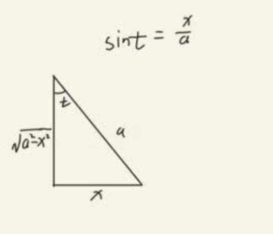

下面是我第二次做题的答案(错误的,用上我最喜欢绿色)
为什么错误？因为我太一味的追求想要的，忘记了这个过程是需要严谨的
我竟然试图从根式里面提出负号出来，是不是很傻瓜？如果你不觉得建议你也好好反省一下
正确答案所用公式，和错误答案所用公式如下
这道题，第一遍我甚至什么都看不出来，第二遍的时候想用第二类换元法(也就是三角换元，根式换元这些)，因为我第二遍的时候刷了很多题目了
但是我又懒，于是仔细一瞄，那就凑微分呗，分子的x刚好，然后凑完了以后又懵了
因为这个时候还有一个分式和一个三角函数，我想把分式放后面，我竟然想的是ln求到为这个
傻瓜啊，那是分之一，这个是根号分之一，凑后面刚好是根号，还是题目写少了
以下是这个题目用到的公式
第一次写这道题的时候，我是直接从分母提出一个e的x次方，做出来和题目答案有差别，不知道是不是正确的
但是这种方法更简单，然后的话，这道题公式如下：
不瞒你说，第一次写这个题的时候，我就是这样写的，不同的是，我从分母提出e的x次方，答案都是这个
但是参考答案，是这样的
都怪我，太潦草了，囫囵吞枣，仔细一看
这题用的公式就不说了，都是简单的
碰到tan，就是想凑sec的平方来便于放到后面去
当然了，也不完全是，这道题，如果第一次没有经验，可能会将tan变为sin/cos，然后硬解
解的出来当然是 好事，但是当你耗费一大堆精力时间，发现结果错误，那g了
这道题所用公式：
难题，没得说，第二次还是做不出来，我第一眼看见会想分子是不是分母的求导结果，可是，不是
怎么办，想凑，死活不知道怎么凑，将分母展开更不行，那是打开潘多拉魔盒
算了，硬记这种方法吧，分子前面是1开头，我们可以同除x或者x方，将分母的x变1，那只能除x方
第二遍还是没有写出来，但是我隐约知道，要用下面的导数凑出一个式子，但是我只是将分母导数的系数定为1，造成
我即便是凑出来了，还是会出现约不掉的情况，原来是导数和后面约定为两个未知数
等我三刷吧
这道题第一遍刷的时候，头疼死我了，在脑海中始终有个声音告诉我说，什么和差公式，什么什么鬼的
想了无数时间，第二遍写的时候，觉得so easy，这个方法如果不做题真的想不出来，反正我不行
就是把分子化为分母的导数加上分母的倍数，这一题的方法和前面有一题是一样的
这道题目能够让你困惑的就是三角换元的回代问题了，sint，cost这些怎么求出来的？
瞧好了，小子，我只演示一遍
第二遍写的时候，一味的往下做，没有在关键的地方稍做停留，造成解答过程过于冗余复杂
以下是及时止损的答案
等着三刷吧你就，完全不在状态
我干，连续两天做不对，等着三刷吧你
这道题，以上是我第二遍第一次做错以后想了半天出来的，题目是运用有理分式分解直接分的，我是凑出来的
给你看看为什么我等于错在哪里
问题就出现在我把积分限外的符号放进来，直接套用那个积分公式，我到现在也没有搞懂为啥错了
于是只能将1-t的平方化为平方差公式拆分
当然你也可以试一试这个方法
这道题挺简单的，我做的时候犯了一个错误就是
我竟然系数写成1/2，因为我觉得要消掉2，所以我加个1/2，做题做糊涂了都
没啥好说的，我实力变牛逼了只能说😁😁😁
第一次我还傻乎乎的自以为是的化简，还换元，几步分部积分法就出来了
分部积分法就出来了，也不知道第一次写的时候犯什么病了
第二次还没有写出来，给了点提示以后竟然想凑平方，凑出来能干嘛？服了你了
答案也挺巧的，利用求出来的回看上一步才能消去，落子后还需重来才能看破迷局
第二遍，简单！
没什么好说的，简单
这道题二刷也没写出来，重点是我会就是分子为常数，分母是多项式，就是凑平方，但是上面含有x
不知道怎么办，原来是先看看分母的求导是什么，凑导数，消去x
不要怕用有理分式分解，我就是这样，老是觉得麻烦不敢用，一旦你无法了，记得分解不失为好方法
还是那句话，不要怕有理分式的分解！你越是嫌麻烦，越摸不透真相！
这道题我感觉确实挺那个啥的，真的，想三角换元不行，分部积分又不敢，我干，真的恶心
多少次了都不长记性，复合函数求导复合函数求导！！！！
卧槽，我真的变牛逼了嘿，当然了，还有标准答案也是，你只需要执行万能公式的转换就可以达到目标
第二遍还是没有写出来，原因在于太死板，三角换元有公式，但不一定必须使用公式规定的换元
其次正确换元以后，如何简单的化简不定积分是最重要的，说了，写一步考虑两步
不要当时爽了，事后就摆手了
涉及到三角换元，一定是要画图，进行回代的
愚蠢至极，不知道怎么想的，竟然想把x除下去凑1/x然后就解出来了，天下哪有这样的好事啊
老老实实写
我想到了用这种替换公式，但是我真的一直不敢下笔，觉得应该不是
并且我还发散去想万能公式，或者想一堆乱七八糟的，上下同除，或者什么的
麻辣，等着三刷
让你看看我的答案有多离谱，不知道为什么老是栽跟头在这里
看出来了吗？就是公式背错了我干
我第一遍的时候都能想到用三角代换，可是第二遍以后竟然越想越多反而造成不必要的麻烦
不知道怎么想的
唉，这道题还是稍微需要观察一下的，主要是分部积分以后分式的拆分有点难办
完全不上心啊，你就一步步来啊，试一试啊至少
没什么好说的，换元代入，求结果
按部就班，别把积分公式的几个根号，没有根号的记混了
这道题我知道了方法就是设x为tant，去掉反三角函数，但是在后面，一定不要忘记，当你看不出来的时候sin和cos才是最好的
这道题首先得会，万能公式，其次万能公式然后还要知道换元简化答案，不然你根本无从下手
三角万能公式是直接替换的
你每次都被牵着鼻子走，不该想的时候想到，该想的时候想不到
任何一个三角函数，都可以写成两个三角函数的导数和其本身的线性关系，当然我这里说的太过绝对，请自证
这一题辅助角公式秒了